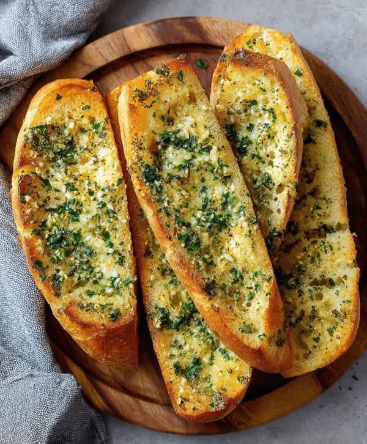

Description
Garlic bread homemade from scratch is so much better than store-bought!
This garlic bread recipe has the best spread, it's buttery and takes 20 mins to make.
Ingredients:
- Fresh garlic
- Chopped italian parsley
- Salt and ground black pepper
- Olive oil
- Unsalted butter
Steps:
- Preheat the oven to 176°C (350°F)
- Make the garlic spread by processing the garlic in a food processor until fine.
Add parsley, salt and pepper and pulse twice
- Heat the olive oil and butter in a medium pan. Remove it from the heat and add the mixture to the spread
- Slice the bread in half horizontally and spread the garlic spread on both halves.
Then, press the halves together and wrap them in an aluminium foil
- Bake the wrapped bread for 5 minutes, then uncover and bake for another 5 minutes. Slice and serve immediately.
Homepage
Return to the top